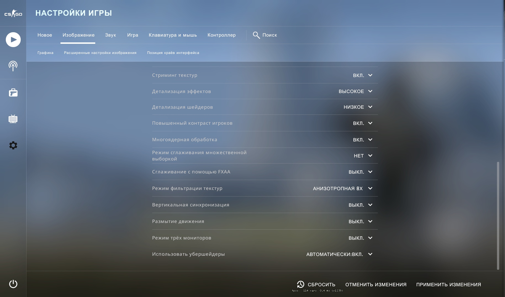

Советы
Карты
Лучшие карты, по нашему мнению, для игры в Соревновательном режиме:
Настройки игры
Настройки графики
Нажимаем на кнопку настройки, выбираем вкадку изображение,инастраваем графику под себя. Если у вас не очень сильный компьютер, лучше поставить все настройкина минально сжглажиаение, кроме режима фильтрации текстур, этот пункт можно поставить на 8x или 16x.
Бинды
Что такое бинды и для чего они вообще нужны? Бинды представляют собой команду или список команд, которые закрепляют за определенными клавишами то или иное действие. Иными словами, мы привязываем что-либо за определенной кнопкой на нашем клавиатуре или мыши.Так же бинды можно испльзовать для улучшения и удобства игрового процесса.
Для начала стоит начать с интерфеса, а точнее расположения рук, прицела и радара. Про оптмальную настроюку рук вы можете прочитать в следующей статье.
Карта в мастерькой steam при помощи которой вы можете настроить расположение рук персонально под себя.Правильная настройка радара играет ключевую роль в получении информации на карте.Оптимальные настройки радара.
cl_radar_always_centered 0
cl_hud_radar_scale 1.1
cl_radar_rotate 1
cl_radar_icon_scale_min 0.7
cl_radar_scale 0.3